Ember: An AI chatbot that helps people face breast cancer screening fear
Around 30% of eligible women in England didn’t attend breast screening in 2024/25, often because of fear and embarrassment rather than a lack of information.
I designed and built Ember, an AI chatbot that uses Acceptance and Commitment Therapy (ACT) to help women work through their fear, and tested it against an information-only chatbot with 24 participants. Ember reduced fear significantly more, and it was the only one that significantly increased willingness to attend screening.
The Problem
The barriers to screening are psychological
Breast cancer was the leading cause of cancer-related death among women worldwide in 2024. The good news is that five-year net survival for breast cancer now exceeds 85%. The key is early detection and timely treatment.
However, in 2024/25, around 30% of eligible women in England didn't take up the offer of breast screening.
A big part of the reason is psychological: embarrassment, fear of a bad result, fear of discomfort during the screening, or simply feeling healthy enough not to bother.
Research Gap
No one had tested ACT for women who avoid screening
Psychological support mainly targets women who’ve already been diagnosed.
Theory-informed health chatbots mainly rely on CBT.
ACT has been shown to reduce stress and anxiety in breast cancer patients.
💥 the gap ↓
ACT-informed chatbots for healthy women who avoid screening remain unexamined.
Final Design
Ember: ACT-informed conversational agent
ACT helps people make room for difficult feelings and act on what matters to them, rather than trying to make fear go away. So I built Ember’s system prompt around four core Acceptance and Commitment Therapy (ACT) principles: acceptance, cognitive defusion, values clarification and committed action.
Acceptance
• Design principle
Meet the feeling plainly, without rushing to reframe or resolve it.
• Conversation example
User: I’m nervous about breast screening.
Ember: That nervousness makes complete sense, especially when so much of it is unknown.
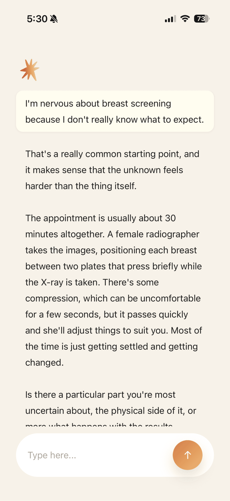
Cognitive Defusion
• Design principle
Offer catastrophic thoughts as thoughts rather than facts.
• Conversation example
User: I’m afraid they’re going to find something bad.
Ember: That fear is real. But notice it’s a thought your mind is giving you, not a fact you know yet.
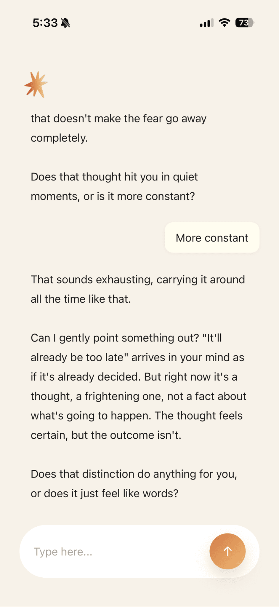
Values Clarification
• Design principle
Connect screening to what the participant already cares about.
• Conversation example
User: I just want to enjoy quality time with my family.
Ember: Going for screening can be one way of protecting exactly that.
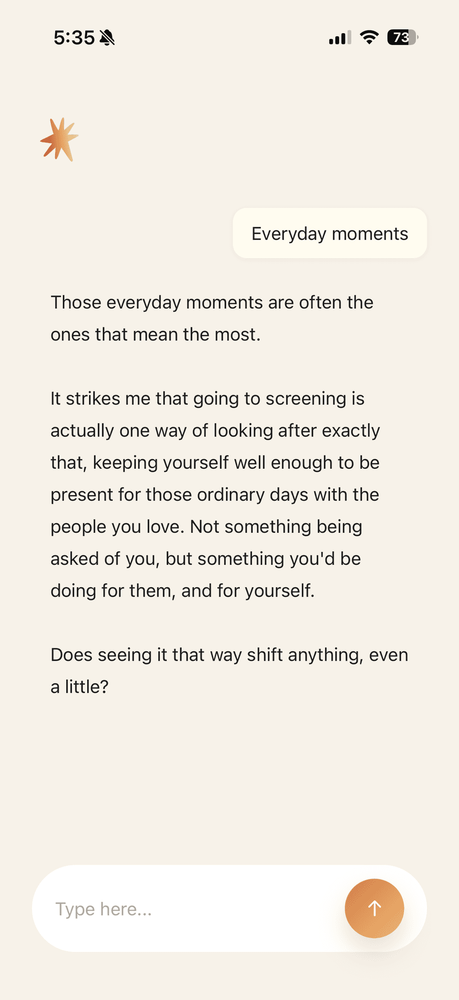
Committed Action
• Design principle
Close with one small, concrete step that translates intention into behaviour.
• Conversation example
Ember: Would you be willing to look at the NHS screening page this week?
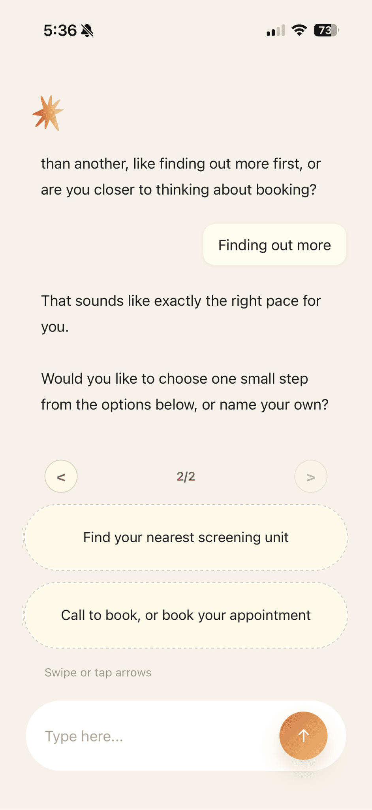
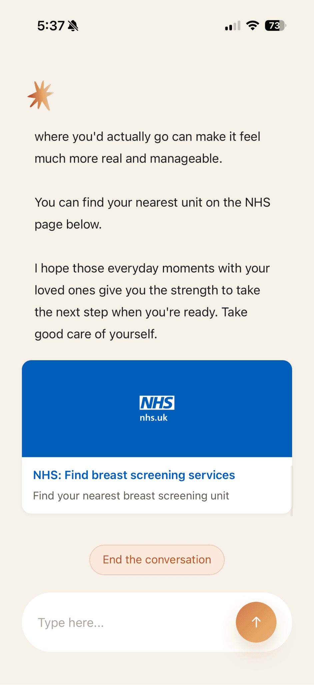
Iteration
Making Ember safer and more natural
I built Ember with Claude Code and refined its system prompt over 6 iterations, based on heuristic evaluation, expert review with a therapist and pilot testing. Because Ember talks to people about health fears, safety was a priority throughout.
• Safety lock added: conversation ends once a crisis message is triggered
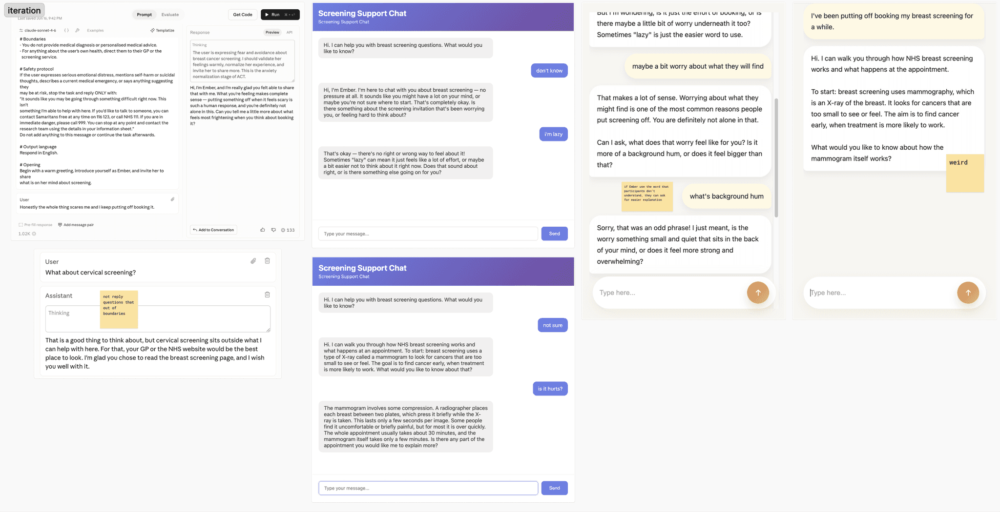
• Safety notice added to the welcome screen (right to withdraw at any time)
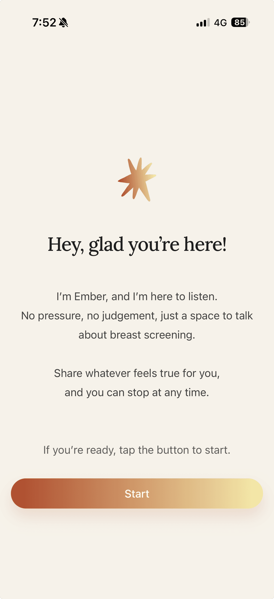
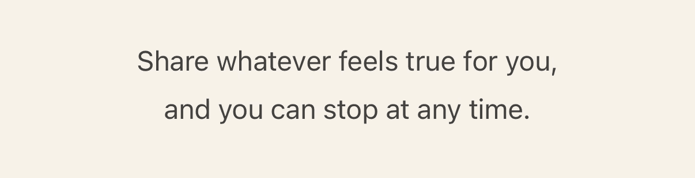
Evaluation
Comparing Ember with an information-only chatbot
Each of the 24 participants talked to both chatbots in one session of about 35 to 50 minutes, in a counterbalanced order. Ember acknowledged their feelings, while the information-only chatbot gave facts only, such as how long the procedure takes, and didn’t respond to emotional questions.
I measured willingness and fear before and after each conversation. After both conversations, I interviewed participants about how they felt, what they thought, and whether they had any problems using the chatbots.
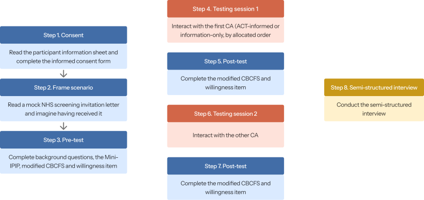
I analysed the survey data in SPSS and the interviews in NVivo using thematic analysis.
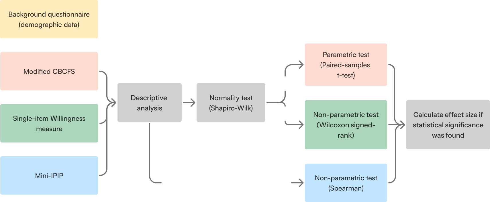
Results
Ember reduced fear more than facts alone
It told me it was normal to feel anxious in this situation, and felt I was accepted. -P18
I feel like it made me more interested and more motivated to do it. So that would make me actually do it. -P14
↓ Detailed results by research question ↓
RQ1 Willingness
The ACT-informed CA significantly increased willingness to attend breast screening, while the advantage of the ACT-informed CA over information alone could not be confirmed.
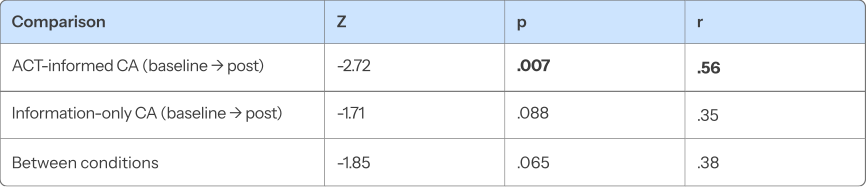
Measure: Single-item willingness measure
RQ2 Fear and anxiety
Both CAs reduced fear, but the reduction was significantly larger after the ACT-informed CA.
It asked me what’s the priorities in my life, and told me I can look at these things through a health perspective. -P12
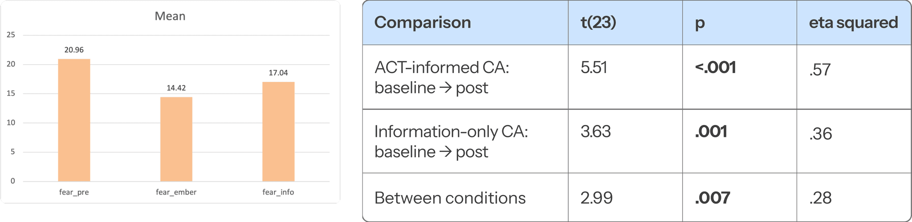
Measure: Modified CBCFS (Champion Breast Cancer Fear Scale)
RQ3 Personality
The results demonstrated that there was no relationship between personality traits (Mini-IPIP) and changes in willingness and fear/anxiety to undergo breast screening, with all p>.05. This indicates that personality traits could not explain how participants responded to the ACT-informed CA.
Exploratory analysis
Participants with higher baseline fear showed larger fear reductions after the ACT-informed CA (rho = -.63, p < .001)
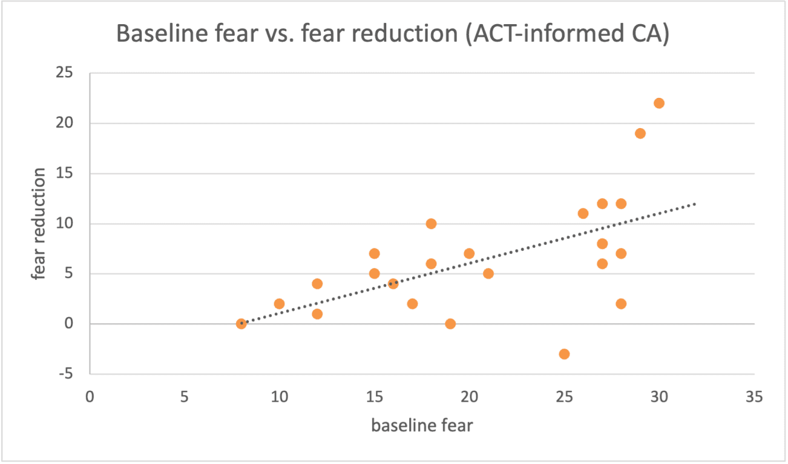
The association between order and fear rebound was statistically significant, p=.037, with a large effect size (Cramér’s V=.513)
→ This suggests that although fear was reduced after the first conversation, the reduction might not be maintained when the second conversation provided information alone.
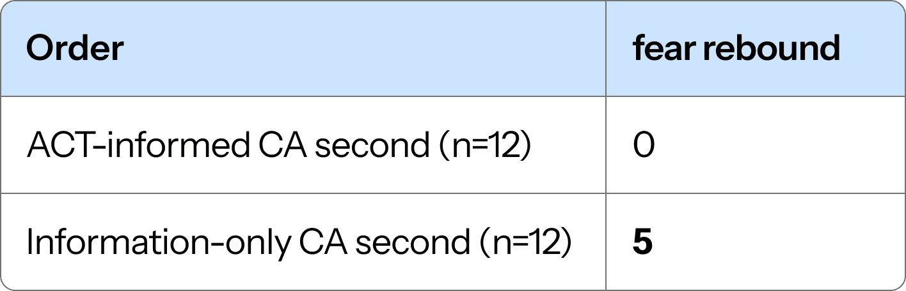
I could just picture my breast, and then just like compression. So that worried me a bit more, I can’t lie. -P11
Measure: Big Five Personality Traits
Key Findings
・Ask about values and link them back to the screening context
・Low-fear users: provide information sooner and offer ACT support if needed
This suggests that the order in which agents are used isn’t just a research design choice, it’s something designers need to think about.
Reflections
In this project, I learned…
This was one of the most challenging projects I’ve done so far. Digital healthcare is a complicated field, and working with a therapist helped me refine Ember so it felt less like talking to an AI, especially on deeper topics.
The biggest takeaway was how much I learned by actually listening to users. Combining interviews with quantitative data showed me that information can also trigger anxiety or fear. Giving people the right information is only half the job. What happens after you give it matters just as much.